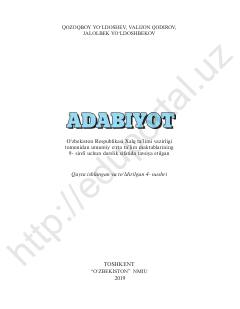

9A9-sinf maktab o‘quvchilari uchun mo‘ljallangan adabiyot fani darsligi.
Mazkur darslik umumiy o‘rta ta’lim maktablarining 9-sinfi uchun mo‘ljallangan bo‘lib, o‘quvchilarni milliy va jahon adabiyoti namunalari, badiiy asar tahlili hamda adabiyot nazariyasi asoslari bilan tanishtiradi. Kitobda mumtoz va zamonaviy adbiyotimizning yirik vakillari ijodi qamrab olingan. Nashr o‘quvchilarning adabiy-estetik tafakkurini rivojlantirishga xizmat qiladi.